作品卡示例 · 文案为虚构情境
个人联想：勇气与从容
带着勇气出发
愿我换了环境，仍敢表达自己的想法。
“我喜欢冠饰的对称布局，想用它提醒自己保持从容。”
文化参考：唐将军《古傩迎宾》个人联想：勇气与从容
从一个地方的故事开始，看见面具背后的人与生活。
愿我换了环境，仍敢表达自己的想法。
“我喜欢冠饰的对称布局，想用它提醒自己保持从容。”
文化参考：唐将军《古傩迎宾》8 个章节 · 选择你感兴趣的部分阅读
左右滑动查看五个时期。配图均取自本站白描档案；“相关传统形象”用于帮助理解历史，不代表作品制作于该朝代。
原资料将这件青铜面形记为商代，并指向江西新干大洋洲。以其白描观察早期面具造型的线索。

汉唐傩仪中的方相氏具有四目形象与驱疫职责。这里通过传承人的作品，观察这一古老角色的延续。

“银发婆婆”的馆藏介绍提及宋代雕刻技法，可从发髻、眉眼与含笑面貌，观察技艺传承的线索。

地方傩戏形成鲜明的角色造型。开山莽将以直立双角、圆睁双眼与外露獠牙，表现镇妖猛将的威严。

传统雕刻在当代继续传承。彭国龙以繁密的镂空冠饰与人物细节，塑造湘东唐将军的形象。
打开一件作品，阅读档案与出处，再决定是否留下参考。原档案标为“推定”的地区继续保留该标记。
地域分布
这些图表是本项目的视觉分析与分类记录，不能等同于传统自身的分类。语义主题由角色类别映射；怪诞、威慑评分来自档案文本的关键词加权规则，并非实物测量或用户感受调查；部位热区的依据与一致性仍待补充核验，不用于判断文化价值或推荐个人祝愿。
这里记录的是照片中提取、归并的颜色，受光照和背景处理影响，不等于实物色卡，也不直接代表传统寓意。
色彩图谱将在浏览到这里时加载。
每张图片等权计算，看看这批样本中常见的色系。
选择颜色查看对应作品，也可以按面具名称或地域寻找配色。
用相同的比例尺度并列查看两组样本。数量与来源不同，结果只说明本次收录的图片。
地域沿用档案标签。“推定”尚待核实，“未明确地区”不能用于判断地方特色；细分标签也不等于省份数量。
最多留下 8 种颜色，带到画布下方直接选用。颜色的样本出处会一起保留。
本页精选4件有具体馆藏记录的作品，暂以亚洲四组资料为起点。原资料包有80条图片记录、79个不同来源页，记录数不等于独立实物数。日本组包含根付和微型面具，斯里兰卡组包含不同面具类型；其余记录尚未逐件整理为展品。
下载80条图片来源清单（CSV）人们为什么需要这些角色？先了解它们在传统中的职责与使用场景，再看看哪一种与你在意的事情有关。遇到有共鸣的故事或细节，就把它留下。
这里展示的是彭国龙的六件湘东傩面具作品。介绍分别注明当地傩事记载与角色的一般民俗背景；这些背景不等于每件作品的实际使用经历。“心意启发”由本项目提出，供你形成自己的表达。
可以是一份自我期待，也可以是对他人的关心。不需要讲述私人经历。
先留下感兴趣的参考，再写下你想表达的心意。
收藏面具是留下文化参考。分区填色保留原线稿细节，选颜色就能开始；自由绘画可以继续添上自己的纹样。更换底稿或线稿会替换当前底稿，已有笔触和截取局部保留，也可以撤销。
分区填色按固定块面改色，再次点按可以换色；橡皮只擦自由绘画的笔触。使用原线稿的区域填色时，颜色固定在纸面，不随局部移动，建议先调构图再上色。
颜色和新增图案可以承载你的个人联想，请把它与资料中的传统含义分开说明。
两种方式可以随时切换，画面会保留。可以先填色，再自由添画；留白也可以是你的选择。
沿原线稿的部位分区，冠饰、眉眼、鼻部与胡须可以分别上色。先试一组配色，再把喜欢的部位改成自己的颜色。
选择底稿后，再从色板选一种颜色。
选一种颜色，在画布上添画；也可以切换“区域填色”，轻点线条围住的区域。
画笔在上，颜色在下。在画布外滑动页面；小部位可展开下方名称上色。
先选颜色，再点下面的部位名称，效果与直接点画布相同。左右按画面中的方向标注；白色可以保留，不必全部填满。
从上方参考卡选择一张线稿后，即可改色。取消“锁定位置与大小”后可调整构图；橡皮只擦自己的笔触。
选择“截取局部”，在参考线稿上拖出一个矩形。框内线条会从原线稿中拆出，可单独调整。这是手动框选，不会自动识别眉眼或冠饰，也不会带走填色和笔触。
先调整局部，再填色。删除、调整和截取都可撤销；每件作品最多保留 8 处局部。
仅此浏览器可见。再次创作时，也可以回来看一看。